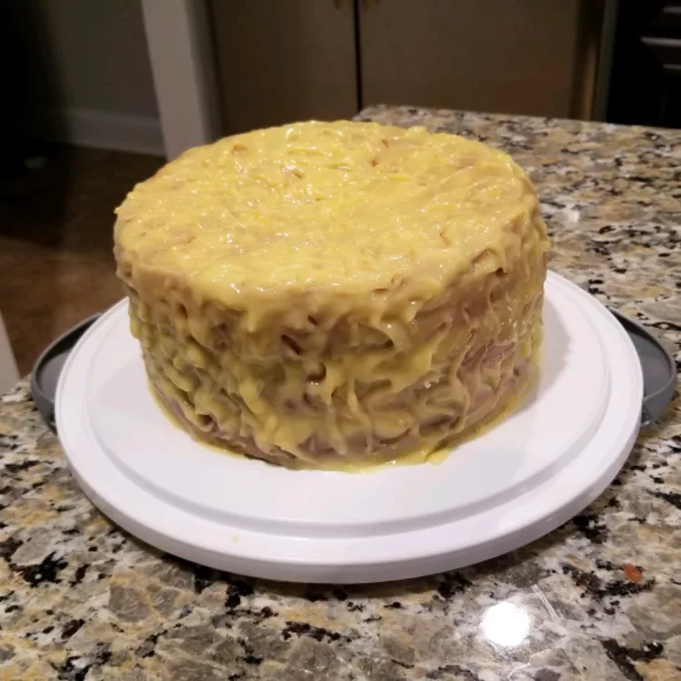

Lemon Cheese Cake Recipe

Description
This lemon cheese cake recipe isn't made with cheese — it is a layer cake that's filled with a tangy homemade lemon curd (which is another name for lemon cheese). If you like, use your favorite scratch recipe for the cake, but I usually like to simplify all I can.
Ingredients
- 1 (15.25 ounce) package yellow cake mix
- 1 cup milk
- 1 (3.5 ounce) package instant vanilla pudding mix
- 3 large eggs
- ⅓ cup vegetable oil
- 1 ½ cups white sugar
Directions
- Preheat the oven to 350 degrees F (175 degrees C). Grease and flour three 9-inch round cake pans.
- Mix together cake mix, milk, instant vanilla pudding, 3 whole eggs, and oil in a large bowl. Pour batter into the prepared pans.
- Bake in the preheated oven until a toothpick inserted into the center of cakes comes out clean, about 25 minutes. Set aside cakes on wire racks to cool completely.
- Combine sugar, butter, lemon juice, 6 egg yolks, flour, and lemon zest in the top half of a double boiler. Cook, stirring constantly, over medium heat until mixture is thick enough to spread. Remove from heat and allow lemon curd to cool completely.
- Run a knife around the edges of the cake pans. Invert cakes; spread cooled lemon curd between cake layers.
- Eat your heart out!